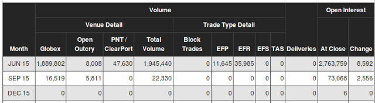

Bir alıcı bir satıcı arasında standardize edilmiş miktar, kalite, ve nakliyat tarihi ve fiyatı alım günü önceden karalaştırılan sözleşmelere vadeli işlem sözleşmeleri (VİS) ismi veriliyor. Yani bugün üzerinde anlaşılan miktar ve kalitede enstrüman, sözleşme bittiği gün sözleşme alıcısına verilecektir, sözleşme bunu garantileyen kanuni bir belgedir. Sözleşmedeki temel enstruman miktarına eşit nakit ödemesi de yapılabilir, bu konunun detaylarına gireceğiz. Özet: Ödeme ve varlığın transferi gelecekte olur, fiyat kararlaştırılması bugün olur [1], [2, sf. 202]. VİS piyasaları medyada daha çok ilgi gören senet piyasalarından kat kat daha büyüktür.
VİS’ler çoğunlukla petrol, bakır, kahve, mısır, vs. gibi emtia ürünlerinde bilinir, fakat bir VİS’in temel enstrümanı finansal bile olabilir; mesela S&P 500 indisini temel alan VİS vardır, Eurodollar’ı temel alan VİS de vardır. Kontratlar standarttır demiştik, mesela New York kahve sözleşmesi 17 ton’dur (37,500 pound), Chicago mısır sözleşmesi 5,000 kiledir (bushel), ya da Britanya para birimi pound’u için sözleşme 62,500 pound alışverisi üzerindendir. Her sözleşmenin fiyat bilgisi farklı ölçekte olabilir, buna dikkat, mesela hububat ürünleri kile başına dolar olarak, bakır her pound (ağırlık birimi) için sent olarak (doların kuruşu) alınır ve satılır.
Aracı kurumları alım fiyatının tamamının hemen ödenmesini mecbur kılmaz, bir teminat (margin), tüm fiyatın ufak bir yüzdesi üzerinden sözleşmeye girilmesine izin verir. Bu ufak yüzde tabii ki finansal bağlamda borsacılar tarafından kaldıraç olarak ta kullanılabilir, eğer teminat için yüzde 10 gerekiyorsa, bunu 10 seviyesinde bir kaldıraç olarak kullanabiliriz.
Sözlemelerin teslimatı ay bazındadır, o ayın belli gününde teslimat olur, o ayda başka günde teslimat olmaz. Ayrıca her ayda teslimat olmayabilir, bu tarım ürünlerini düşününce mantıklı herhalde, çünkü her ürün her ayda hasat yapılamaz. Mesela buğdayın (wheat) sadece Mart, Mayıs, Temmuz, Eylül ve Aralık teslimat günleri / sozlesmesi vardır, Ocak buğday sözleşmesi almak ya da satmak mümkün değildir. Piyasalarda kontrat ayları kodlanarak belirtiliyor, bu kodlar Ocak’tan başlayarak F, G, H, J, K, M, N, Q, U, V, X, Z diye gider. Harfler tam bir sırayı takip etmiyor, nedeni tam olarak bilinmeyen bir şekilde kodlama böyle, o yüzden eşlemeyi bir yerde kayıtlı, ya da akılda tutmak / ezberlemek lazım, tahmin etmek mümkün değil.
Sözleşme, teslimat günündeki ödenecek fiyatı garantilemek için yapılıyorsa, o zaman sözleşme fiyatının piyasadaki dalgalanması o sözleşmenin baz aldığı baz ürünün teslimat günü / ayındaki fiyatı hakkında bir genel “tahmin’’ olarak algılanabilir. Mesela bugün (Nisan 29, 2016) baktım, Ağustos 2016 ham petrol sözleşmesinin (NYMEX CL) fiyatı 47.66 dolar, petrolün bugünkü fiyatı 46.41. Yani VİS piyasası yaklaşık 3 ay sonra petrol fiyatının artacağını düşünüyor.
Bir sözleşmenin fiyatı, o sözleşmenin teslimat tarihi yaklaştıkça, sözleşmenin baz aldığı ürünün günlük piyasa (spot) fiyatına yaklaşır. Bu arz talep kanunlarının kaçınılmaz sonucu - eğer bir sözleşme teslimat gününe çok yakın baz ürününden daha yukarıda ise açığa satışlar olacaktır, bu satışlar VİS’in fiyatını aşağı çeker, az olduğu durumda tam tersi. Birkaç hafta sonra teslimatı olacak kahve eğer bugün 10 lira civarında ise, bu sözleşmesi için kim 20 lira öder ki? Ek not: teslimat tarihine yakın bir VİS’in likiditesi azalır, yani o sözleşme üzerinde alım / satım daha zorlaşır, bu lojistik bir durum, akılda tutmak iyi olur.
VİS’lerin çıkış noktası tarım ürünleridir. Bir çiftçi olduğumuzu düşünelim, buğday üretiyoruz, fakat tarım ürünlerinde iklim şartlarına göre hasat, ve aylar sonraki fiyat beklenenden çok farklı olabilir, bu durumda VİS belli miktar, kalite ve daha önemlisi bir fiyatı şimdiden kitlememizi sağlar, bu çiftçi için çok faydalı, mesela bir fiyatı kitlemek isteyen çiftçi buğday sözleşmesi (açıga) satar. Diğer yandan buğday alımı yapmak isteyen bir fırıncı (ekmek yapmak için buğday lazım), bir sözleşme satın alabilir. Her iki taraf ta aylar, hatta yıllar sonraki fiyatı kitlemiş olur, gece rahat uyurlar.
Tabii sözleşmelerden, teslimattan bahsettik, fakat emtia bazlı VİS’ler için bile fiziki teslimat şart değildir, hatta VİS’lerin sadece yüzde 1’i fiziki teslimatla sonuçlanır. Teslimat gününde çoğunlukla nakit ödeme yapılır, mesela çiftçi / fırıncı örneğinde Haziran teslimatında kilesi 4 liradan anlaşılmış olabilir, ama Haziran ayında buğday kilesi 5 lira olmuş diyelim; eğer sözleşme 5000 kile üzerinden ise, çiftçi aradaki 1 x 5000 = 5000 liralık farkı fırıncıya öder. Tabii çiftçi hala buğdayını satmak istemektedir, ürününü yerel pazarda satar mesela, günün fiyatı daha yüksek 5 lira olduğu için o fiyattan satış yapıp o parayı “kazanmış’’ olur, ama daha önce kile başı 1 liralık farkı sözleşme farkı yüzünden kaybetmişti, ve sonuç olarak kile basına 5-1=4 liralık satım yapmış olur. Ama bu problem değil çünkü zaten ta önceden”kitlediği’’ fiyat buydu! VİS çiftçinin tam istediğini yapmış oldu. Diğer yandan fırıncı 5000 lira “kazandı’’, ama hala buğday almak istiyor, o da kendi yerel pazarından kilesi 5 liradan alım yapar, sözleşme bedelinden daha yüksek bir fiyattan alım yapmış oldu, fakat 1 liralık farkı nakit ödeme ile çiftçiden almıştı, yani o da kile basına 5-1=4 liralık alım yapmış oldu. Her iki taraf ta başta razı oldukları fiyattan alım / satım yapmış oldular.
Eurodollar
Eurodollar VİS’i 1 milyon doların banka hesabında 3 ay tutulmasının bedelini (yani ona verilecek olan faizi) temsil eder. Enstrümanın fiyatı 100 eksi bir rakam üzerinden bir yıllık faizi temsil eder, yani eğer fiyat 96 ise temsil edilen yıllık faiz 100-96=4, yüzde 4 demektir.
Örnek
Diyelim ki bir şirketin 1 Haziran’da bir yatırım, harcama yapması gerekiyor, bugün 1 Mart (harcama 3 ay sonra yani), bu harcama hesapta yoktu, bu bedelin 3 ay sonra borç alınması gerekecek. Şirket karlı bir şirket, ve alınan borcu rahatlıkla 1 Eylül’de (borç alımından yine 3 ay sonra) geri ödeyebilecekler. Diyelim ki bu şirket yerel bankasına gidip istediği zaman LİBOR + 100 baz puanından (100 puan = yüzde 1) faiz ile borç alabiliyor.
Fakat 3 ay sonra LİBOR’un ne olduğu bilinmiyor; eğer şirket bir faizi şimdiden “kitlemek’’ istiyorsa, 1 Haziran bitiş tarihli 10 tane Eurodollar VİS’i açığa satabilir. Diyelim ki 1 Mart’ta VİS’in fiyatı 93.00 ki bu yüzde 7 faiz oranını temsil eder. Bitiş tarihi 1 Haziran’da fiyat 92.50 olmuş olsun, yani faiz yüzde 7.5. Fiyatta 50 baz puanlık değişim olduğu için bitiş tarihinde şirket $2500 x 0.5 x 10 kontrat = $12,500 elde etmis olur. $2500 nereden geldi? Bu değer yüzde 1’lik değişimi temsil eden blok değeri, yüzde 1 yıllık temelde, onu 3 ay bazına indirmek için 4’e böleriz, ve 1 milyon ile çarparız, 1 milyon x 1/4 = $2500. Neyse, şirket bu şekilde gelecekteki bir faiz oranını şimdiden kitlemiş oldu, artık yüzde 7.5 + 100 baz puan ile borç alabilir, ama artık 1 milyon - $12,500 = $9,987,500 için borç alması yeter, çünkü VİS’ten bir kazanç elde edildi. Kayıp ta olabilirdi, o zaman $1,012,500 borç alınması gerekecekti, fakat daha düşük faizden. Her iki durumda da nihai faiz baştan kitlenen yüzde 7 LİBOR üzerinden hesaplanacaktır.
Vadeli İşlem Sözleşmesi Birleştirmek
Aynı baz ürünü temel alan sözleşmeler farklı teslimat aylarında sunulabilir, o zaman Aralık 2015 kontratı almışsak Aralık ayı sonunda kontrat bittiğinde o kontrattan çıkmamışsak petrol bize gönderilecek demektir. Dikkat! Tabii teslimat kapınıza değil, çoğunlukla bir limandaki bir depoya gönderilir. Neyse, fakat spekülatörler genel olarak petrol yatırım amaçlı bir “petrol’’ kontratına para verirler, bu yatırımda, teslimat almadan, istedikleri kadar kalabilmek, ya da kendilerine uygun bir zamanda çıkabilmek (ya da tekrar girmek) isterler. O zaman kontratlar arası bir şekilde geçiş yapmak gerekir. Bu işleme geçiş yapmak (rollover) deniyor, spekülatör kendine uygun zamanda bir kontrattan diğerine geçiyor. Fakat bu durumda, en azından geçmişe dönük analiz bağlamında, elimizde”parçalı’’ bir zaman serisi olacaktır, çünkü VİS’ler zamana bağlıdır, ve her kontratın, aynı alt emtiayı baz alıyor olsa bile, fiyatları farklı olabilir. O zaman mesela geriye dönük kesintisiz bir zaman serisi bekleyen analizlerimiz ne yapacak?
Altta VİX indisini baz alan bir üç ayrı sözleşmeyi görüyoruz, biri Mayıs 2015, diğeri Haziran 2015, öteki Temmuz 2015. Sözleşmeler finansal varlıkları da baz alabilir demiştik, bu bir diğer örnek işte, VİX S&P 500 indisinin oynaklığını baz alan bir sözleşme.
Geçiş için kontratlar arasında hangi tarihlerde atlama yapacağımızı
önceden biliyoruz, bu tarihler altta stitch_point1, ve
stitch_point2 içinde. Birleştirme öncesi durumu gösterelim
(alttaki örnek için veriyi getvix.py ile alabiliriz).
import pandas as pd
stitch_point1 = '2015-03-13'; stitch_point2 = '2015-04-15'
df1 = pd.read_csv('vixmay.csv',index_col=0,parse_dates=True)
df2 = pd.read_csv('vixjune.csv',index_col=0,parse_dates=True)
df3 = pd.read_csv('vixjuly.csv',index_col=0,parse_dates=True)
tmp = df1[(df1.index > '2015-02-13') & (df1.index <= stitch_point1 )]
tmp.Settle.plot(color='blue')
tmp=df2[(df2.index >= stitch_point1) & (df2.index <= stitch_point2)]
tmp.Settle.plot(color='red')
tmp=df3[(df3.index >= stitch_point2) & (df3.index < '2015-05-13')]
tmp.Settle.plot(color='yellow')
plt.savefig('tser_futures_01.png')Görüldüğü gibi kesintiler var. Birleştirme için kullanılan yönteme Panama yöntemi deniyor, detaylar [4]’te. Aslında yöntem çok basit, en sondaki kontrattan başlıyoruz, onun atlama noktasındaki fiyat değerini bir önceki kontrattaki aynı noktadaki fiyatının farkını hesaplıyoruz, ve o fark kadar bir önceki kontrattaki tüm fiyatları üste çekiyoruz. Aynı şekilde bir geriye doğru devam ediyoruz.
diff = float(df3.loc[stitch_point2,'Settle'] - df2.loc[stitch_point2,'Settle'])
df2.loc[:,'Settle'] = df2.Settle + diff
diff = float(df2.loc[stitch_point1,'Settle'] - df1.loc[stitch_point1,'Settle'])
df1.loc[:,'Settle'] = df1.Settle + difftmp=df1[(df1.index > '2015-02-13') & (df1.index <= stitch_point1 )]
tmp.Settle.plot(color='blue')
plt.ylim(15,21)
tmp=df2[(df2.index >= stitch_point1) & (df2.index <= stitch_point2)]
tmp.Settle.plot(color='red')
tmp=df3[(df3.index >= stitch_point2) & (df3.index < '2015-05-13')]
tmp.Settle.plot(color='yellow')
plt.savefig('tser_futures_02.png')Fiyatlar akıcı bir şekilde birleşmiş oldu. Biraz daha esnek bir kod üzerinden birleştirmeyi yaparsak,
import sys; sys.path.append('../tser_070_voltar')
import util
dfs = [df1,df2,df3]
sps = [stitch_point1, stitch_point2]
dfs = util.stitch_prices(dfs, 'Settle', sps)
dfs = dfs[(dfs.index > '2015-02-13') & (dfs.index < '2015-05-13')]
dfs.plot()
plt.savefig('tser_futures_05.png')Oynaklık ve Sözleşmeler
Mayıs 2015 ve Eylül 2015 Eurodollar kontratlarına Mayıs ayında bakınca (yani en yakın ve nisbeten uzak bir kontratı karşılaştırınca) fiyat serisinin ilkinde ne kadar az oynaklığı olduğunu, diğerinde daha fazla oynaklık olduğunu görüyoruz.
# geted.py ile veriler alindi
import pandas as pd
df = pd.read_csv('edk.csv',parse_dates=True,index_col=0)
df['ED9'] = pd.read_csv('edu.csv',parse_dates=True,index_col=0).Settle
df['ED1'] = df.Settle
df = df[df.index > '2014-11-01']
df = df[df.index < '2015-07-01']
df[['ED1','ED9']].plot(ylim=(98.0,100.))
plt.savefig('tser_futures_03.png')Kontango (Contango)
VİS piyasalarında günlük fiyatın (ya da daha yakın tarihli sözleşme fiyatlarının) ileri tarihli sözleşme fiyatlarından daha düşük fiyatlı işlem gördüğü piyasa koşulu. Kontangonun tersi ise “Backwardation” olarak adlandırılmaktadır Diğer isim, taşıma kazancı, daha çok döviz piyasalarında biliniyor olsa da senet piyasları, VİS piyasalarında da kullanılabiliyor.
Taşıma Kazancı (Carry Trade)
Taşıma kazancı tekniğinin temelinde yatan görüş şudur: fiyatlar stabildir, o zaman geleceğin fiyatını tahmin etmek için bugünün fiyatını kullanabiliriz. Eğer dünya değişmezse bir varlığı elde tutmamızla ele geçen getiri o varlığın doğal getirisidir, senet olsaydı bu temettü kazancı olurdu, tahvil durumunda tahvilin kupon getirisi (eğer borç ile alım yapılmışsa borca giden faizin çıkartıldığı hali). Mesela bugün [2015’te bir gün] Haziran 2018 Eurodollar VİS’ini 97.94’ten alabilirim, ya da Mart 2018’i 98.01’den alabilirim. Eğer getiri eğrisinde hiçbir değişim olmazsa 3 ay sonra Haziran VİS’i 98.01’e çıkacak demektir, ki bu sözleşme başına 0.07 kazanç demektir.
Genel bir kanıya göre bu iyi bilinen durum herkesin ondan faydalanmak istemesi sebebiyle arbitraj üzerinden yokolmalıdır, fakat çoğunlukla bu olmuyor. TK stratejisiyle tutarlı bir şekilde para kazanmak mümkün, tabii arada sırada geçici olarak sözleşmeler arasındaki bağlantı kopar ve kazanç durumu alt üst olur, yani bu tekniğin çok felaket bir negatif yamukluğu (negative skew) vardır. Benim teorim tutarlı olarak kazanılan paranın bu tekniğin o berbat negatif yamukluk riskini göze alanlar için bir tür mükafat olması. Her neyse, TK’nin patlama anlarından uzak durarak, ya da diğer stratejilerle karıştırarak etkili bir şekilde kullanılması mümkündür.
Peki TK nasıl bir tahminsel sinyale dönüştürülebilir? Bu tekniğin temeli elde tuttuğumuz kontratı daha yakın, ya da uzak zamandaki başka bir kontrat ile karşılaştırmaktır. İki kontratın arasındaki fiyat farkını alırız, aradaki zaman farkına (yıl olarak, mesela 6 ay 0.5 sene demektir) böleriz, ve ek bazı hesaplar sonrası (altta görülüyor) bu rakamı bir tahmine dönüştürebiliriz.
Geçiş
Biraz önce Panama metotunu gösterdiğimizde daha önceden bilinen geçiş zamanlarına göre birleştirimi yaptık. Fakat bu kontrat geçiş zamanlarının önceden saptanması lazım, yani her gün hangi kontrat üzerinde olduğumuzu bilmemiz, ve o kontratın süresi bitmeden belli bir süre önce bir sonraki kontrata geçmemiz gerekiyor. Geçiş için iki kavram önemli, geçiş döngüsü (rollcycle) ve bitiş tarihi (expiration date).
Her kontratın önceden kararlaştırılmış bir son tarihi vardır, bu tarih ötesinde kontrat artık geçerli değildir. Mesela Eurodollar kontratının bitiş tarihi kontrat ayının üçüncü Çarşamba’sıdır, yani Temmuz 2016 kontratı için bu 20 Temmuz 2016 demektir. Diğer VİS’ler için farklı zamanlar olabilir, bazı türler için kontrat ayından bir önceki ayın bir günü bile mümkündür.
Geçiş anının hesabı için direk bitiş zamanını seçebilirdik, ama o gün çok geç olur; Kendimize bitiş zamanı ile bugün arasında belli bir pay bırakmamız iyi olur. Bu birkaç sebepten dolayı; bir, zaman payı kontrattan çıkmak için bize zaman esnekliği sağlar, iki, taşıma kazancını uyguladığımız zaman mesela bir ay daha yakın olan kontrat üzerinde fark hesaplamamız gerekiyorsa (measuring the rolldown) bu kontrata da geçmemek için en az 30 günlük bir pay bırakmak lazım. Eğer daha fazla yakınlıktaki kontrat üzerinde fark hesaplıyorsak bu pay daha da büyük olmalı tabii ki.
Geçiş döngüsü ise hangi aydan hangi aya atlayacağımızı kontrol eder. Her kontrat için her ay uygun değildir, mesela ham petrol için Haziran’dan çıkıp direk bir sonraki ay Temmuz’a mı atlamamam lazım? Bu sorunun cevabı likiditeyle yakın alakalı. Tercihimiz VIS’leri likit olduklari, yani çok alanı, çok satanı olduğu zaman alıp satmak olmalı çünkü bu durumda rahat, çabuk almak, satmak mümkün olabilir. [4], her VİS’in likidite davranışı farklı olabilir der; Eurodollar her yılın her ayında likit bir durumdadır, fakat kıyasla ham petrol (crude oil) böyle değildir. Tercih edilen geçiş döngüsünde sadece likit olan ayları kullanmaktır, böylece tahminsel stratejimiz al / sat sinyalleri ürettiğinde bu aylarda rahatça alım, satım yaparız.
Altta bazı örnekler görüyoruz. Bu ekranlar aracı kurumumuz tarafından bize sağlanan herhangi bir günde VİS piyasasında neler olduğunu, sipariş kayıtlarını (order book) gösteren bir araçtan rahatça görülebilir.
Altın (Gold)
Eurodollar
Ham Petrol
ABD 10-Yıllık Hazine Bono VİS’i

Likiditeyi ölçmek için [4]‘ün kullandığı yöntem üstteki ekranlarda toplam hacim (total volume) ve kapanıştaki açık ilgi (open interest at close) kolonlarına bakmaktır. Bu kolonlardaki rakamlar hangi ayda en yüksek ise o ayların likiditesi iyi demektir. Üstteki örnekler dört değişik kalıbı anlatmak için seçilmiş, kalıplardan biri sadece önümüzdeki sene için likidite olması, altın VİS’i buna örnek. İkinci kalıp “sonsuz likidite’‘, Eurodollar buna örnek, Mart 2020’ye kadar her ayda likidite var, istediğimiz zaman alım satım yapmamız mümkün yani. Üçüncü kalıp sezonsal kalıp, eğer bir VİS’in baz aldığı enstrüman tarımsal, enerji ile alakalı ise o zaman hasat, diğer bazı periyotsal sebeplere bağlı olarak VİS’lerin o aylarda likiditesi artıp diğerlerinde azalabiliyor. Ham petrol buna bir örnek, Aralık aylarında çok yüksek likidite var, sonraki senenin Ocak’ından başlayarak azalıp azalıp Haziran’a kadar geliyor, orada yükseklik var, sonra tekrar azalma. Bu tür sezonsal VİS’lerde bir “favori’’ ay oluyor genelde, ve bu ay’ı seçmek en iyisi. Dördüncü kalıp her sene tek ve en yakın kontrat durumu, ki ABD 10-yıllık tahvil buna örnek - sadece en yakın Haziran likit, başka hiçbir şans yok.
Kaynaklar
[1] Wikipedia, Futures contract, https://en.wikipedia.org/wiki/Futures_contract
[3] Heakal, Futures Fundamentals: How The Market Works, http://www.investopedia.com/university/futures/futures2.asp
[4] Carver, Systems building - futures rolling, http://qoppac.blogspot.co.uk/2015/05/systems-building-futures-rolling.html